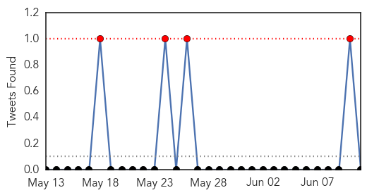

Hepatitis
30-Day Web Trend
0 alerts, 0 warnings

30-Day Twitter Trend
0 alerts, 0 warnings

Article Locations

Article Confidences

Top Articles:
- 0.792
- Tracking food poisoning outbreaks with genomic sequencing
- 0.774
- HIV outbreak's source remains elusive
- 0.623
- Online comments show support for HPV vaccine but misperceptions too
- 0.618
- Online comments show support for HPV vaccine but misperceptions too
- 0.527
- Novartis gains FDA approval for Promacta® providing new option for children, ages 6 and older, with chronic ITP, a rare blood disorder
Top Tweets:
-
No tweets found for Jun 11, 2015
Influenza
30-Day Web Trend
0 alerts, 0 warnings

30-Day Twitter Trend
1 alerts, 0 warnings

Article Locations

Article Confidences

Top Articles:
- 0.960
- Hong Kong's SARS scars fuel MERS jitters as virus plan starts, Government & Economy
- 0.884
- Bird Flu confirmed in Ghana
- 0.862
- Bird Flu confirmed in Ghana
- 0.862
- Bird flu in Arizona? 4 AZ facilities quarantined, egg prices on
- 0.800
- For bird flu researchers, Delaware Bay is prime terrain
- 0.755
- Possible bird flu in Pinal, Santa Cruz counties
- 0.751
- June 10, 2015 Archives
- 0.751
- June 10, 2015 Archives
- 0.751
- June 10, 2015 Archives
- 0.751
- June 10, 2015 Archives
- 0.751
- June 10, 2015 Archives
- 0.751
- June 10, 2015 Archives
Top Tweets:
-
No tweets found for Jun 11, 2015